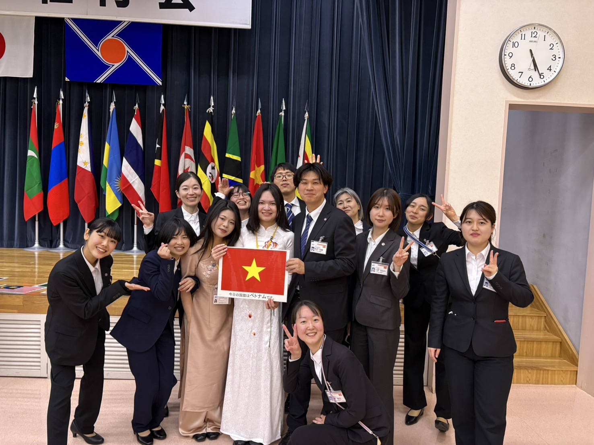
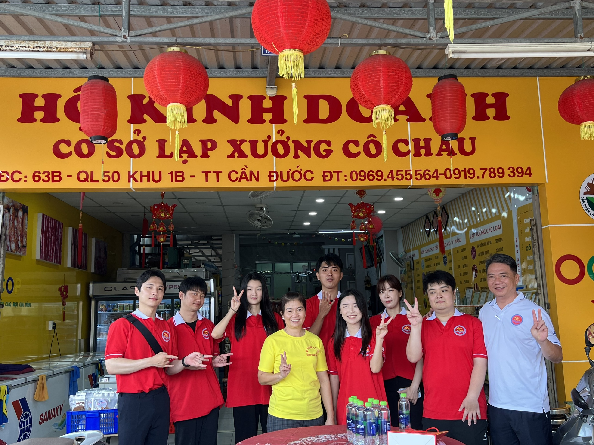

factory
特定技能登録支援機関 | 宮城県
丸一
ベトナム人技能実習生・特定技能外国人への通訳サポート。日本語でのコミュニケーションが難しいベトナム人スタッフと企業の橋渡し役を担当。
7年間のベトナム生活と専門知識を活かし、企業サポート・通訳・アドバイザーとして活動。ベトナムの全国紙にも複数掲載されています。


ベトナム人技能実習生・特定技能外国人への通訳サポート。日本語でのコミュニケーションが難しいベトナム人スタッフと企業の橋渡し役を担当。
新しくベトナムビジネスを立ち上げるにあたり、アドバイザーとして参画。ベトナム市場の文化・慣習・ビジネス環境について助言。
医療ツーリズム事業のベトナム展開に際し、現地市場・文化・患者ニーズについてアドバイス。ベトナム人患者の誘致戦略を支援。
ベトナム語翻訳・通訳を中心に、様々な依頼を受注。品川入管でのベトナム人通訳同行、ベトナム語書類の翻訳なども対応。
2023年11月
ホーチミン市人文社会科学大学ベトナム学部の外国人留学生として取材。ベトナム語習得の難しさや全国旅行の経験について語る。
記事を見る open_in_new2024年
テト（旧正月）を過ごす外国人留学生として取材。ベトナムのお正月文化への思いについてコメント。
記事を見る open_in_new2025年
JICA海外協力隊としてハロン大学での日本語教育活動について掲載。クアンニン省と日本の教育・文化交流に関する取り組みが紹介される。
卒業生推薦コメント（日本語）が現在も掲載中。ベルギー・アメリカ・イギリスなど各国の卒業生と並んで日本人代表として紹介されています。
サイトを見る open_in_newAmazon Kindle
ベトナム留学の経緯と現地での経験をまとめた書籍。慶應退学からベトナム正規留学に至るまでのリアルなストーリー。
※ 2027年4月より再公開予定（現在JICA契約により非公開）
Amazon Kindle（2027年4月出版予定）
ホーチミン留学からJICA協力隊2年間の経験をまとめた書籍。日越共生をテーマに、現場から見えた日本とベトナムの関係を綴る。
執筆中